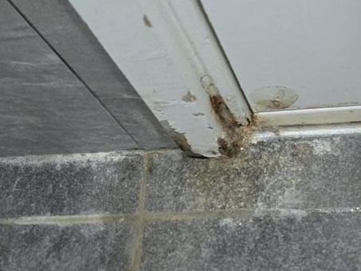
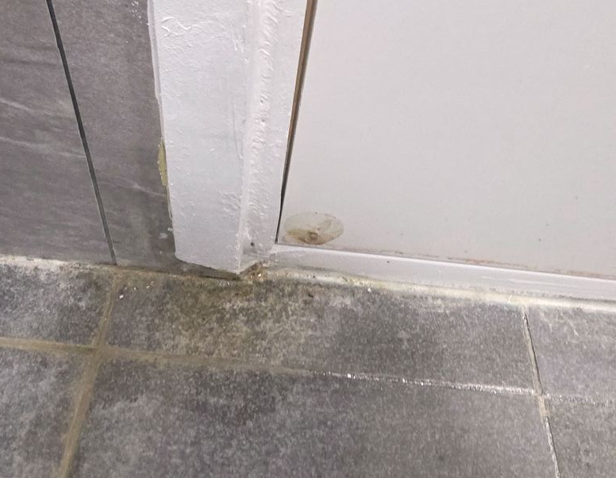

부평 문지방수리 · 방문교체 · 문틀수리
부평 문턱·문틀·문짝·손잡이를 한 번 방문으로
부평 문지방수리·부평 방문교체·부평 문틀수리를 한 팀이 봅니다. 욕실 문턱 누수와 썩은 문틀, 처진 문짝과 헛도는 방문손잡이, 부푼 욕실문 교체, 부서진 문턱의 인조대리석 교체까지 한 번 방문으로 확인합니다. 부평은 1980~90년대 아파트와 빌라가 밀집한 지역입니다. 30년 넘은 단지가 많아 문턱 방수층이 수명을 다한 세대가 대부분이고, 다세대는 환기 부족으로 문틀 하부 부식이 심한 편입니다. 인천 다른 지역과 묶어 이동합니다. 부평 지역은 사진을 문자로 보내주시면 방문 전에 원인과 예상 범위, 금액대를 먼저 알려드립니다.
부평 문지방수리 시공 전과 후
실제 현장 사진입니다. 비슷한 상태라면 참고해 보세요.

문틀 하부에 물 자국이 번지고 도장면이 벗겨진 상태

하부를 보수하고 방수 마감까지 마친 상태
부평 문지방수리 · 부평 문틀수리 · 부평 썩은문지방수리
부평은 1980~90년대 아파트와 빌라가 밀집한 지역입니다. 30년 넘은 단지가 많아 문턱 방수층이 수명을 다한 세대가 대부분이고, 다세대는 환기 부족으로 문틀 하부 부식이 심한 편입니다. 인천 다른 지역과 묶어 이동합니다.
30년 차 단지의 방수층 만료
문턱 아래 몰탈까지 젖은 경우가 많습니다.
다세대 밀집 지역의 환기 부족
욕실이 좁고 창이 없어 문틀이 마를 새가 없습니다.
아래층 누수 신고
오래된 단지라 층간 누수 분쟁이 잦습니다.
부평 방문수리 · 부평 방문손잡이교체 · 부평 문짝닿임수리
부평에서 문짝 처짐·닿임, 방문손잡이교체 문의가 들어옵니다. 문을 통째로 바꾸기 전에 경첩·걸림쇠·손잡이부터 봅니다. 대부분 한 시간 안에 끝나는 작업입니다.
문이 바닥에 끌린다
경첩이 처졌거나 나사 구멍이 헐거워진 상태입니다. 나사 자리를 보강하고 문을 다시 앉힙니다.
세게 밀어야 닫힌다
문틀이 안쪽으로 밀렸거나 걸림쇠 위치가 어긋난 겁니다. 조정으로 잡힙니다.
손잡이가 헛돈다 · 잠기지 않는다
래치 내부가 마모된 상태로, 방문손잡이교체로 해결됩니다.
부평 방문교체 · 부평 화장실문교체 · 부평 문짝교체
부평에서 화장실문교체·안방 방문교체 문의가 꾸준합니다. 문틀 공사 없이 문짝만 교체하는 방식이라 하루 안에 끝나고 비용도 작습니다. 구옥 비규격 문도 실측 제작이 됩니다.
욕실문 하부 부풀음
습기를 먹어 아래가 부푼 문은 수리보다 ABS도어 교체가 맞습니다. 다시 부풀지 않습니다.
문짝 색·마감이 낡음
문틀은 두고 문짝만 새 색으로 바꿉니다. 여러 짝 동시 교체 시 색을 맞춥니다.
이사 전 방문 여러 짝 교체
실측 한 번으로 안방·작은방·욕실문을 같이 바꿉니다.
부평 문턱교체 · 부평 화장실문턱 · 부평 인조대리석 문턱
부평에서 화장실문턱이 부서졌거나 흔들린다는 문의가 들어옵니다. 목재 문턱은 결국 다시 썩기 때문에 인조대리석 문턱으로 교체하는 쪽을 권합니다. 문틀과 만나는 자리까지 같이 정리합니다.
문턱이 부서지거나 조각남
밟는 자리가 주저앉은 문턱은 걷어내고 인조대리석 문턱으로 다시 앉힙니다.
문턱 들뜸 · 흔들림
바탕이 삭은 겁니다. 바탕을 정리한 뒤 새 문턱을 고정합니다.
문턱 단차가 높다
유모차·보행기가 걸리면 높이를 낮춰 앉힐 수 있습니다.
부평 문지방수리 · 부평 방문교체 시공 사례
부평 및 인근에서 진행한 문턱·문틀·문짝 작업입니다.
몰탈까지 젖은 상태
환기 부족 세대
사진 한 장이면 시작됩니다
부평 욕실문턱 누수 · 문짝 처짐 · 손잡이 고장
이 중 하나라도 있으면 사진을 보내주세요
정확한 이름을 몰라도 됩니다. 보이는 증상만 말씀해 주세요.
욕실문턱 누수 · 문지방 곰팡이
샤워 후 문턱 앞 바닥에 물이 고이거나 곰팡이가 올라옵니다. 문턱 아래 방수층이 갈라진 전형적인 모습입니다.
문틀 하부가 검게 삭음
문틀 아래쪽 도장이 벗겨지고 눌러보면 물컹합니다. 상한 구간만 잘라내고 이어 붙입니다.
문이 바닥에 끌림 · 세게 밀어야 닫힘
경첩 처짐이나 걸림쇠 어긋남입니다. 문짝 교체 없이 조정으로 잡히는 경우가 대부분입니다.
방문손잡이가 헛돌거나 안 잠김
래치 마모입니다. 방문손잡이교체로 끝납니다. 규격은 사진으로 확인됩니다.
욕실문 아래가 부풀음
속이 물을 먹은 상태라 수리로는 안 잡힙니다. ABS도어로 문짝만 교체합니다.
문턱이 부서지거나 흔들림
목재 문턱이 수명을 다한 겁니다. 인조대리석 문턱으로 교체하면 다시 썩지 않습니다.
부평 문턱없애기 · 부평 문턱철거 · 부평 무턱시공
문턱에 걸려 넘어지시거나 휠체어·보행기가 지나가야 한다면 부평 문턱제거로 턱을 없앨 수 있습니다. 다만 턱만 깎아내면 물이 욕실 밖으로 넘칩니다. 배수 구배와 방수선을 같이 잡아야 해서 단순히 턱을 갈아내는 작업과는 다릅니다. 낙상 예방만이 목적이면 부평 문턱낮추기로 끝나는 경우도 많습니다.
부평에서 하는 작업 · 안 하는 작업
문의 전에 확인하시면 시간이 절약됩니다.
하는 작업
- 욕실 문턱·문지방 누수 보수, 썩은 문지방 재시공
- 썩은 문틀 하부 부분 보수 (상한 구간만 잘라내고 이어 붙임)
- 문짝 처짐·닿임·경첩 보수, 방문손잡이교체
- 욕실문·안방문 ABS 문짝 교체 (문틀 유지)
- 인조대리석 문턱 교체, 문턱 단차 낮춤
- 문턱 없애기(무턱 시공)
안 하는 작업
- 문틀 전체 교체·문틀 신설
- 현관 방화문·중문·샷시(창호)
- 욕실 전체 리모델링·타일 공사
- 상가·공용화장실 큐비클 칸막이 → 큐비클 전문 사이트
부평 문지방수리 · 방문교체 · 문틀수리 문의 전 확인
네. 방문 시공 가능합니다. 사진을 먼저 문자로 보내주시면 방문 전에 원인과 금액대를 알려드립니다.
물이 어느 지점으로 넘어오는지 먼저 확인하고, 젖어 있는 목재나 몰탈을 걷어낸 뒤 방수 마감까지 함께 합니다. 젖은 부분을 남기면 새로 올린 것도 같은 자리에서 다시 상합니다.
됩니다. 문틀 아래쪽은 물이 가장 먼저 닿는 자리라 문턱과 같이 상해 있는 경우가 많습니다. 썩은 부분만 잘라내고 방수 소재로 이어 붙이는 방식으로 진행하며, 문틀 전체 교체는 하지 않습니다.
아닙니다. 문틀은 그대로 두고 문짝만 실측해 교체합니다. 욕실문은 ABS도어로 바꾸면 다시 부풀지 않습니다. 문틀 공사가 없어 하루 안에 끝납니다.
됩니다. 손잡이 규격은 사진으로 확인되고 대부분 당일 교체됩니다. 문이 처져서 손잡이가 안 맞는 경우는 경첩 조정을 같이 봅니다.
걷어낼 범위와 소재로 정해집니다. 인조대리석 문턱으로 바꿀지, 기존 문턱을 보수할지에 따라 갈리니 사진을 보내주시면 방문 전에 금액대를 안내해 드립니다.
네. 문턱·문틀·문짝·손잡이를 한 팀이 봅니다. 같은 집에서 여러 항목을 한 번에 진행하면 출장 횟수와 비용이 줄어듭니다.
문짝 조정·손잡이 교체는 한 시간 안팎, 문턱 재시공은 반나절, 문틀 하부 부식까지 걷어내면 하루 정도 봅니다. 문턱 시공 당일과 다음 날은 물 사용을 피하셔야 합니다.
합니다. 다만 턱만 깎아내면 물이 욕실 밖으로 넘칩니다. 배수 구배와 방수선을 같이 잡아야 해서 욕실 바닥 상태를 먼저 봐야 합니다.
누수·부식 보수는 통상 임대인 부담 항목입니다. 시공 전 사진과 견적서를 드리니 집주인분께 그대로 전달하시면 됩니다.
인근 지역도 방문합니다
아래 지역은 부평과 함께 이동하는 권역입니다.